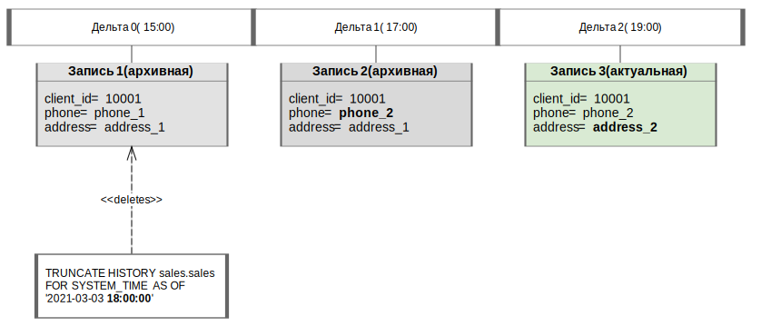

Запрос позволяет удалить записи логической таблицы согласно заданным условиям. В зависимости от параметров запроса удаляются записи одной из категорий:
записи таблицы, которые были перенесены в архив до указанного момента времени (включительно) и соответствуют условию, заданному в запросе;
все архивные и актуальные записи таблицы, которые соответствуют условию, заданному в запросе.
Если в запросе указан момент времени, система определяет дельту,
которая являлась последней закрытой дельтой на тот момент, и удаляет все записи логической таблицы,
которые стали архивными в эту дельту или ранее и соответствуют заданному условию. Иначе, если задано
ключевое слово infinite, удаляются все записи таблицы, соответствующие условию.
В ответе возвращается:
пустой объект ResultSet при успешном выполнении запроса;
исключение при неуспешном выполнении запроса.
В результате успешного выполнения запроса записи, удовлетворяющие его параметрам, удаляются из логической таблицы.
Внимание: удаленные данные не подлежат восстановлению средствами системы.
На рисунке ниже показан пример работы запроса с указанным моментом времени. В примере логическая таблица
содержит три записи об одном клиенте, загруженные в рамках трех разных дельт (дельта 0, дельта 1, дельта 2)
в течение одного дня (2021-03-03). В результате исполнения запроса удаляется запись 0: на момент
времени 18:00:00 дельта 1 была последней закрытой дельтой, и только запись 0 была архивной в эту
дельту (запись 1 была актуальной).

Удаление архивной записи по запросу с меткой времени
TRUNCATE HISTORY [db_name.]table_name FOR SYSTEM_TIME AS OF date_time_expression
[WHERE filter_expression]
db_name — имя логической базы данных. Указывается опционально, если выбрана логическая БД,
используемая по умолчанию;
table_name — имя логической таблицы, из которой удаляются записи;
date_time_expression — выражение, определяющее категорию удаляемых записей. Может принимать
следующие значения:
'YYYY-MM-DD HH:MM:SS' — удаление архивных записей по указанный момент времени;
'infinite' — удаление всех актуальных и архивных записей;
filter_expression — условие выбора записей, подлежащих удалению.
Удаление архивных записей таблицы sales, в которых значение столбца product_units меньше 10,
по момент времени '2019-12-23 15:15:14':
TRUNCATE HISTORY sales.sales FOR SYSTEM_TIME AS OF '2019-12-23 15:15:14'
WHERE product_units < 10
Удаление всех актуальных и архивных записей таблицы stores, в которых значение столбца
identification_number равно 123456:
TRUNCATE HISTORY sales.stores FOR SYSTEM_TIME AS OF 'infinite'
WHERE identification_number = 123456